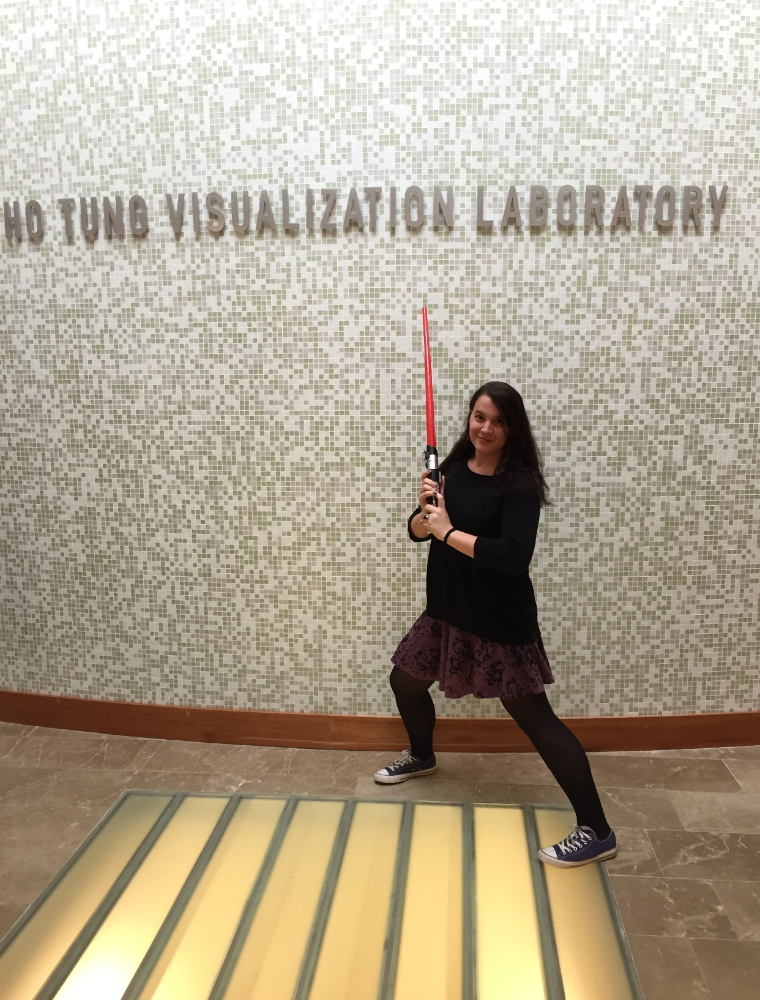

My first introduction to outreach was through working at the Ho Tung VisLab and hosting Open Houses at Foggy Bottom Observatory at my alma mater. After starting graduate school, I quickly became involved with Girls' Science Investigations through Yale Pathways to Science, where I have made cardboard telescopes, toy rockets, oobleck, and a lot of noise with middle school girls from the greater New Haven area over the years.
Once I began to realize that there was such a field as science communications, I became increasingly interested in the storytelling aspect of scientific research. I participated in my school's 3 Minute Thesis competition, making it to the finals with my presentation on my primordial black hole research, “How Small Black Holes Teach Us About the Big Bang”, as well as the New Haven Astronomy on Tap where I spoke on the topic of "Cosmic Archaeology: Or, How Do We Know the Things That we Know?". Inspired to further develop my storytelling and communication skills, I attended ComSciCon-AIP at the American Institute of Physics in 2019, and subsequently trained as an Astronomy Ambassador at the 235th Meeting of the American Astronomical Society. As an AAS Ambassador I have been a tester for the “On-The-Spot Feedback” project, most recently presenting a re-vamped version of "Cosmic Archaeology" at the Bay Area Science Festival in October 2020.

One of my favorite extracurriculars that I've taken up in grad school has been writing for Astrobites, where I summarize interesting astronomy papers at a level accessible to upper-level undergraduates. I've also gotten the opportunity to interview plenary speakers at the American Astronomical Society Annual Meetings, live-blog talks, and summarize sessions for posterity, and get to participate in a wonderful community of fellow astronomers. I love the process of writing (particularly when I get to do it in my native language!), and am always looking for more opportunities for science writing.